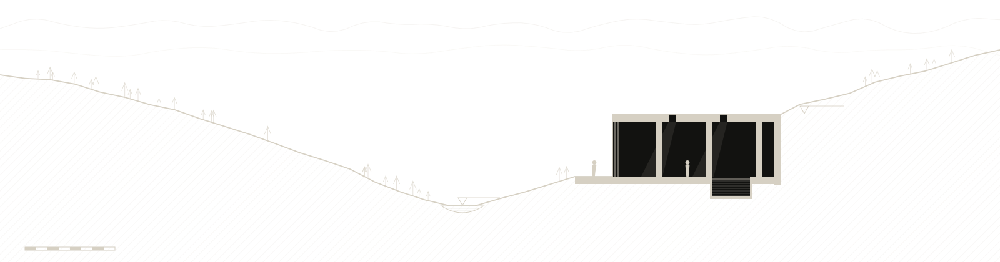

A slow practice of twenty-six architects, landscape designers and builders. We take on few buildings, use few materials, and stay with each one for decades.

- 01Begin with the ground
A year of visits before the first line is drawn.
- 02One material, all the way through
Walls, floors and roofs from one quarry or one forest.
- 03Shade before glass
Deep reveals and thermal mass instead of machines.
- 04Build less, keep it longer
Every detail can be repaired by a local trade.
How we work
Walking
We visit the site in every season, measure the sun and the snow line, and talk to the people who farm and build there.
Modelling
Every building begins as a plaster model at 1:200, cast on a copy of the terrain cut from the survey.
Sampling
Stone, lime and timber are tested on the workshop wall for at least one winter before we specify them.
Building
An architect from the studio lives near the site for the length of construction and stays on call after handover.
Partners
With twenty architects, landscape designers, model makers and builders.
Studios & contact
Zurich
Münsterhof 12
8001 Zürich, Switzerland
+41 44 210 98 00
Monday to Friday, 9:00–18:00
Kyoto
Kamigyo Ward 48
602-0898 Kyoto, Japan
+81 75 210 44 80
Monday to Friday, 10:00–18:00
New York
104 Franklin Street
New York, NY 10013
+1 212 555 0148
Monday to Friday, 9:00–17:00